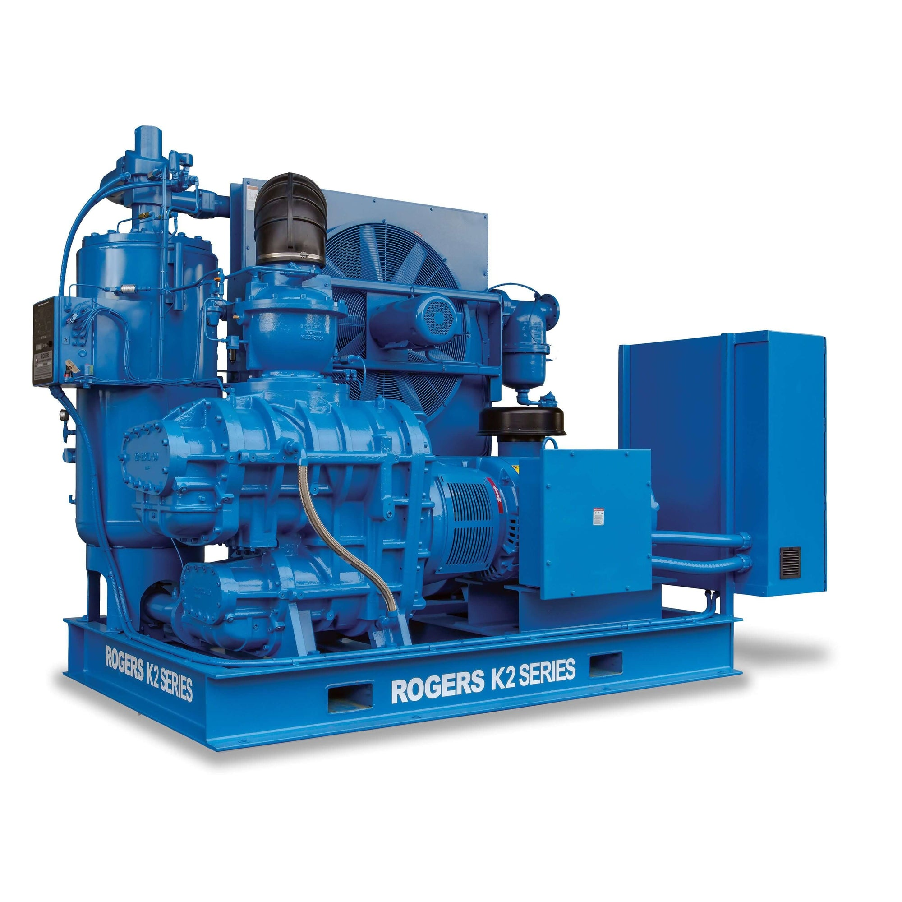

Ćwiczenie 2: Bilans Sprężarkowni
Projekt Termo-Tech – Etap 2: Praca Sprężania, Moc Silnika i Chłodzenie
Wydział Inżynierii Środowiska i Inżynierii Mechanicznej


Projekt: Etap 2 – Sprężarkownia
Do napełniania naszego zbiornika (\(V = 5 \text{ m}^3\)) wybrano sprężarkę tłokową. Musimy zweryfikować jej parametry energetyczne i dobrać system chłodzenia.
Założenia projektowe
- Powietrze ssane: \(p_1 = p_{atm} = 750 \text{ mmHg} \approx 1 \text{ bar}\) (barometr – jak w Ćw. 1), \(t_1 = 20^\circ\text{C}\) (temperatura hali).
- Powietrze tłoczone: \(p_2 = 9.5 \text{ bar}\) (ciśnienie absolutne).
- Wydajność: \(\dot{V}_n = 100 \text{ m}^3/\text{h}\) (normalnych).
- Proces sprężania: politropa z wykładnikiem \(n = 1.35\).

Zadanie 2.1: Praca Techniczna Sprężania
Oblicz jednostkową pracę techniczną \(l_t\) potrzebną do sprężenia 1 kg powietrza.
Praca techniczna przemiany politropowej: \[ l_t = \frac{n}{n-1} R T_1 \left[ 1-\left(\frac{p_2}{p_1}\right)^{\frac{n-1}{n}} \right] \]
Dane
- \(R = 287 \text{ J}/(\text{kg}\cdot\text{K})\)
- \(T_1 = 293.15 \text{ K}\)
- \(p_2/p_1 = 9.5\)
- \(n = 1.35\)
\[ l_t = \frac{1.35}{0.35} \cdot 287 \cdot 293.15 \cdot \left[ 1-(9.5)^{\frac{0.35}{1.35}} \right] \] \[ l_t = 3.857 \cdot 84\,134 \cdot [ 1-1.7926 ] \approx 324\,500 \cdot (-0.7926) \]
\(l_t \approx -257\,200 \text{ J/kg} \approx -257 \text{ kJ/kg}\)
Uwaga
Ujemna praca techniczna oznacza, że sprężarka pobiera pracę z zewnątrz – czyli napędzana jest silnikiem!
Zadanie 2.2: Moc Silnika Napędowego
Jakiej mocy silnik napędowy (\(N\)) trzeba zamówić?
1. Strumień masy (warunki normalne: \(p_n = 101\,325\) Pa, \(T_n = 273.15\) K): \[ \dot{m} = \frac{p_n \cdot \dot{V}_n}{R \cdot T_n} = \frac{101\,325 \cdot (100/3600)}{287 \cdot 273.15} \] \[ \dot{m} = \frac{2814.6}{78\,394} \approx 0.0359 \text{ kg/s} \]
2. Moc teoretyczna (z wartości bezwzględnej \(l_t\)): \[ N_t = \dot{m} \cdot |l_t| = 0.0359 \cdot 257 \approx 9.23 \text{ kW} \]
3. Moc silnika – wyższa ze względu na sprawność mechaniczną \(\eta_m = 0.9\): \[ N = \frac{\dot{m} \cdot |l_t|}{\eta_m} = \frac{9.23}{0.9} \]
Odpowiedź
Potrzebny silnik o mocy \(N \approx 10.3 \text{ kW}\).
Zadanie 2.3: Temperatura Tłoczenia
Do jakiej temperatury nagrzeje się powietrze na wylocie? To kluczowe dla doboru oleju i chłodnicy!
\[ T_2 = T_1 \cdot \left(\frac{p_2}{p_1}\right)^{\frac{n-1}{n}} \]
\[ T_2 = 293.15 \cdot (9.5)^{0.2593} = 293.15 \cdot 1.7926 \]
\(T_2 \approx 525.5 \text{ K} = 252.4^\circ\text{C}\)
Zagrożenie
\(252^\circ\text{C}\) to bardzo wysoka temperatura (oleje sprężarkowe: typowo maks. ok. \(180^\circ\text{C}\))! Grozi zapłonem par oleju. Konieczne jest chłodzenie międzystopniowe lub intensywne chłodzenie cylindra.
Zadanie 2.4: Bilans Ciepła (I Zasada)
Ile ciepła musimy odprowadzić w chłodnicy, aby schłodzić powietrze z powrotem do \(30^\circ\text{C}\) przed podaniem na halę?
I Zasada dla układu otwartego (chłodnica – ciśnienie stałe, \(p = \text{const}\)): \[ \dot{Q}_{chl} = \dot{m} \cdot (h_{wylot} - h_{wlot}) = \dot{m} \cdot c_p \cdot (T_{wylot} - T_{wlot}) \]
Dane
- \(\dot{m} = 0.0359 \text{ kg/s}\)
- \(t_{wlot} = 252.4^\circ\text{C}\) (ze sprężarki)
- \(t_{wylot} = 30^\circ\text{C}\) (wymagane)
- \(c_p \approx 1005 \text{ J}/(\text{kg}\cdot\text{K})\)
Różnica temperatur w K = różnica w °C: \[ \dot{Q}_{chl} = 0.0359 \cdot 1005 \cdot (30 - 252.4) \]
\(\dot{Q}_{chl} \approx -8020 \text{ W} \approx -8.0 \text{ kW}\)
Minus oznacza ciepło odprowadzone z układu.
Zadanie 2.5: Sprężanie Dwustopniowe
\(252^\circ\text{C}\) to za dużo! Rozważmy sprężanie dwustopniowe z chłodzeniem międzystopniowym do \(30^\circ\text{C}\).
Optymalne ciśnienie pośrednie (minimalna suma prac obu stopni; ściśle – przy chłodzeniu do \(T_1\)): \[ p_{pośr} = \sqrt{p_1 \cdot p_2} = \sqrt{1 \cdot 9.5} \]
\(p_{pośr} \approx 3.08 \text{ bar}\)
Temperatura po I stopniu (\(1 \rightarrow 3.08\) bar, \(n = 1.35\)): \[ T_{I} = 293.15 \cdot (3.08)^{0.2593} \approx 293.15 \cdot 1.339 \]
\(T_{I} \approx 392.5 \text{ K} \;\Rightarrow\; t_{I,out} \approx 119^\circ\text{C}\)
Temperatura po II stopniu (\(3.08 \rightarrow 9.5\) bar, start od \(30^\circ\text{C} = 303.15 \text{ K}\)): \[ T_{II} = 303.15 \cdot (9.5/3.08)^{0.2593} \approx 303.15 \cdot 1.339 \]
\(T_{II} \approx 405.9 \text{ K} \;\Rightarrow\; t_{II,out} \approx 133^\circ\text{C}\)
Wniosek
\(133^\circ\text{C}\) zamiast \(252^\circ\text{C}\)! Temperatura tłoczenia niższa o ok. 120 K – bezpieczna dla oleju i uszczelek.
Zadanie 2.6: Porównanie Procesów Sprężania
Porównaj co do wartości bezwzględnej pracę techniczną \(|l_t|\) (przy sprężaniu zawsze \(l_t < 0\)) dla trzech procesów (\(p_1 = 1\) bar, \(p_2 = 9.5\) bar, \(T_1 = 293.15\) K):
Izotermiczny (\(n = 1\)) \[ |l_t| = R T_1 \ln\frac{p_2}{p_1} \] \[ |l_t| = 287 \cdot 293.15 \cdot \ln(9.5) \]
\(|l_t| \approx 189 \text{ kJ/kg}\)
Minimum teoretyczne.
Politropowy (\(n = 1.35\))
Z Zadania 2.1:
\(|l_t| \approx 257 \text{ kJ/kg}\)
Nasza sprężarka (chłodzona).
Adiabatyczny (\(n = \kappa = 1.4\)) \[ |l_t| = \frac{1.4}{0.4} \cdot 287 \cdot 293.15 \cdot \] \[ \cdot \left[(9.5)^{0.286}-1\right] \]
\(|l_t| \approx 266 \text{ kJ/kg}\)
Bez chłodzenia.
Wniosek
Sprężanie izotermiczne wymaga o 29% mniej pracy niż adiabatyczne (\(1 - 189/266\)) i o ok. 26% mniej niż nasza politropa (\(1 - 189/257\)). Dlatego chłodzimy sprężarki!
Dlaczego \(n = 1\) „psuje” wzór?
Problem: jeśli wstawisz \(n = 1\) do wzoru politropowego, otrzymasz dzielenie przez zero (\(\frac{n}{n-1}\)). Dlaczego? Bo zmienia się postać funkcji podcałkowej:
\[ l_t = -\int_{p_1}^{p_2} v \, dp \]
Dla \(n \neq 1\) (politropa): funkcja potęgowa \(v = C \cdot p^{-1/n}\).
Całka z \(x^a\) to \(\frac{x^{a+1}}{a+1}\) – stąd bierze się ułamek \(\frac{n}{n-1}\).
Dla \(n = 1\) (izoterma): funkcja hiperboliczna \(v = C/p\).
Całka z \(1/x\) to logarytm naturalny (\(\ln x\))! \[ l_t = R T_1 \ln\frac{p_1}{p_2} = -R T_1 \ln\frac{p_2}{p_1} \]
Reguła de l’Hospitala
Fizyka się nie „psuje”. Granica wzoru ogólnego przy \(n \to 1\) dąży właśnie do wzoru z logarytmem.
Zadanie 2.7: Dobór Chłodnicy Wodnej
Musimy odprowadzić \(|\dot{Q}_{chl}| \approx 8\) kW z chłodnicy sprężarki (Zad. 2.4). Oblicz wymagany strumień wody chłodzącej.
Dane
- Woda z sieci wodociągowej: \(t_{w,in} = 15^\circ\text{C}\)
- Maks. temperatura wody na wylocie (założenie projektowe): \(t_{w,out} = 40^\circ\text{C}\)
- Ciepło właściwe wody: \(c_w = 4190 \text{ J}/(\text{kg}\cdot\text{K})\)
\[ |\dot{Q}_{chl}| = \dot{m}_w \cdot c_w \cdot (t_{w,out} - t_{w,in}) \] \[ \dot{m}_w = \frac{8000}{4190 \cdot (40 - 15)} = \frac{8000}{104\,750} \]
\(\dot{m}_w \approx 0.076 \text{ kg/s} \approx 4.6 \text{ l/min}\) (1 kg wody \(\approx\) 1 l)
Koszt wody
Przy cenie \(8 \text{ zł/m}^3\) i pracy sprężarki 2000 h/rok: \(0.076 \cdot 3.6 \cdot 2000 \cdot 8 \approx \mathbf{4380 \text{ zł/rok}}\). Warto rozważyć obieg zamknięty z wieżą chłodniczą!
Zadanie 2.8: Wyznaczanie Wykładnika Politropy
Serwisant zmierzył parametry pracy sprężarki. Jaki jest rzeczywisty wykładnik politropy \(n\) tej sprężarki?
Pomiary
- Ssanie: \(t_1 = 22^\circ\text{C}\), \(p_1 = 1\) bar
- Tłoczenie: \(t_2 = 215^\circ\text{C}\), \(p_2 = 8\) bar
\[ \frac{T_2}{T_1} = \left(\frac{p_2}{p_1}\right)^{\frac{n-1}{n}} \]
Krok 1: logarytmowanie \[ \frac{488.15}{295.15} = 8^{\frac{n-1}{n}} \] \[ 1.654 = 8^{\frac{n-1}{n}} \] \[ \ln(1.654) = \frac{n-1}{n} \cdot \ln(8) \]
Krok 2: wyznaczenie \(n\) \[ 0.503 = \frac{n-1}{n} \cdot 2.079 \] \[ \frac{n-1}{n} = 0.242 \]
\(n = \dfrac{1}{1 - 0.242} \approx 1.32\)
Wniosek
\(n = 1.32 < \kappa = 1.4\) – sprężarka jest chłodzona, choć proces wciąż jest bliższy adiabacie niż izotermie.
Zadanie Domowe (Raport 2)
Temat: odzysk ciepła.
Skoro wyrzucamy 8 kW ciepła do otoczenia, inżynier produkcji proponuje wykorzystać je do podgrzewania wody użytkowej w umywalniach.
Dane
- Woda wodociągowa ma temperaturę \(10^\circ\text{C}\).
- Chcemy ją podgrzać do \(45^\circ\text{C}\).
- Zakładamy, że odzyskamy 80% ciepła z chłodnicy sprężarki (\(0.8 \cdot 8 \text{ kW}\)).
- Ciepło właściwe wody: \(c_w = 4190 \text{ J}/(\text{kg}\cdot\text{K})\).
Zadanie: oblicz, jaki strumień wody \(\dot{m}_w\) [l/min] możemy podgrzać.
Termodynamika Techniczna – Ćwiczenia (Ć2)